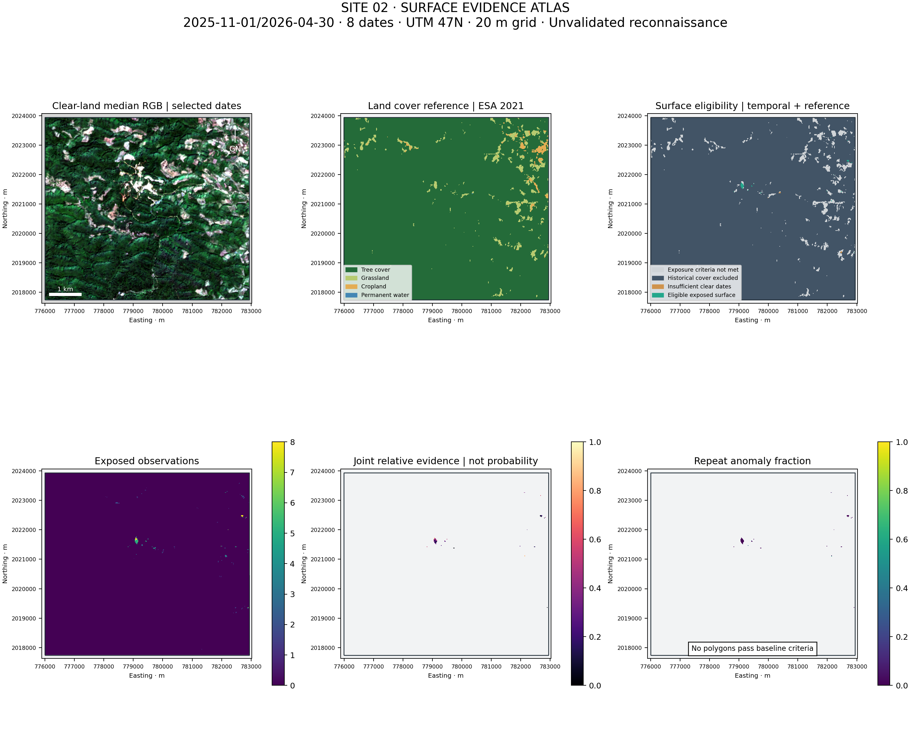

2025-11-01/2026-04-30 · 8 acquisition days · Method 3.0
พื้นที่ผิวเปิดที่ผ่านเกณฑ์ 2.68 ha (0.06% ของ AOI) · กลุ่มที่ผ่านเกณฑ์ 0 กลุ่ม
ผลสำรวจเบื้องต้น ยังไม่มีข้อมูลภาคสนามหรือผลแล็บยืนยันทอง ผลว่างไม่ได้แปลว่าไม่มีทอง

| item_id | date | baseline | tile_cloud_pct | aoi_clear_land_pct | aoi_exposed_pct |
|---|---|---|---|---|---|
| S2C_MSIL2A_20251121T034501_R061_T47QQA_20251121T063616 | 2025-11-21 | 05.11 | 3.937 | 99.698 | 0.017 |
| S2C_MSIL2A_20251201T034131_R061_T47QQA_20251201T063318 | 2025-12-01 | 05.11 | 0.001 | 99.683 | 0.021 |
| S2A_MSIL2A_20251203T034201_R061_T47QQA_20251203T073813 | 2025-12-03 | 05.11 | 0.022 | 99.638 | 0.024 |
| S2A_MSIL2A_20260112T034201_R061_T47QQA_20260112T073809 | 2026-01-12 | 05.11 | 0.022 | 100.000 | 0.075 |
| S2C_MSIL2A_20260120T034051_R061_T47QQA_20260120T062909 | 2026-01-20 | 05.11 | 0.000 | 99.495 | 0.066 |
| S2B_MSIL2A_20260204T033839_R061_T47QQA_20260204T072652 | 2026-02-04 | 05.12 | 0.266 | 99.562 | 0.099 |
| S2B_MSIL2A_20260326T033529_R061_T47QQA_20260326T072554 | 2026-03-26 | 05.12 | 0.033 | 99.668 | 0.129 |
| S2C_MSIL2A_20260410T033531_R061_T47QQA_20260410T090716 | 2026-04-10 | 05.12 | 0.002 | 98.680 | 0.168 |
| code | land_cover | area_ha | aoi_percent |
|---|---|---|---|
| 10 | Tree cover | 4138.08 | 96.362 |
| 30 | Grassland | 124.68 | 2.903 |
| 40 | Cropland | 31.44 | 0.732 |
| 80 | Permanent water | 0.12 | 0.003 |
| category | area_ha |
|---|---|
| Repeated exposed surface before historical-cover veto | 38.60 |
| Historical-cover disagreement: manual review required | 35.92 |
| Repeated exposed surface retained by reference | 2.68 |
Historical-cover disagreements are exported as a separate raster for manual inspection, not as mineral targets. Insufficient scoring samples are reported explicitly in sensitivity results; an empty output under that condition is not an evaluated negative.
| ndvi_max | ratio_percentile | eligible_ha | raw_anomaly_ha | polygon_count | area_ha | scored_dates | evaluation_status | baseline_iou |
|---|---|---|---|---|---|---|---|---|
| 0.2 | 0.85 | 1.84 | 0.00 | 0 | 0.0 | 5 | evaluated | None |
| 0.2 | 0.90 | 1.84 | 0.00 | 0 | 0.0 | 5 | evaluated | None |
| 0.2 | 0.95 | 1.84 | 0.00 | 0 | 0.0 | 5 | evaluated | None |
| 0.3 | 0.85 | 2.68 | 0.04 | 0 | 0.0 | 5 | evaluated | None |
| 0.3 | 0.90 | 2.68 | 0.00 | 0 | 0.0 | 5 | evaluated | None |
| 0.3 | 0.95 | 2.68 | 0.00 | 0 | 0.0 | 5 | evaluated | None |
| 0.4 | 0.85 | 4.44 | 0.04 | 0 | 0.0 | 8 | evaluated | None |
| 0.4 | 0.90 | 4.44 | 0.00 | 0 | 0.0 | 8 | evaluated | None |
| 0.4 | 0.95 | 4.44 | 0.00 | 0 | 0.0 | 8 | evaluated | None |
Repeat anomalies may be soil, weathered material, moisture differences or disturbance. NDVI/SCL is not a complete land-use classification. WorldCover is dated 2021; canopy, crop and built exclusions are conservative. The season is historical, not a live site assessment. Thresholds are analyst assumptions, and no accuracy claim is calibrated against local gold samples.
Regional Lao DGM sources establish geological context only. No verified in-AOI gold occurrences or site geological polygons were acquired in this research. No gold-deposit layer is fabricated. Obtain a georeferenced site geology map and independent assay records to progress from screening to a prospectivity model.
passed: calibration metadata, grid, AOI containment, connected area, support, exported feature count. Source IDs, XML hashes, package versions and configuration are in manifest.json. This is a new AOI; no targets from the previous site are transferred.
| title | url | use | limit |
|---|---|---|---|
| Sentinel-2 processing | https://sentiwiki.copernicus.eu/web/s2-processing | Product radiometry and quality | Calibration is not mineral validation |
| ESA WorldCover | https://esa-worldcover.org/en/about/objectives | Historical 2021 land cover, global accuracy 76.7% | Not current land use or site accuracy |
| Duolong multisensor alteration study | https://www.sciencedirect.com/science/article/abs/pii/S0169136818301173 | Literature context; abstract/search excerpt only | Full publisher text not retrieved; arid study is not Laos validation |
| CLMTV Lao DGM presentation, 2016 | https://www.dmr.go.th/wp-content/uploads/2023/02/01-Lao-PDR_CLMTV.pdf | Regional geological context and map availability | Regional map scale cannot validate this AOI's observations |